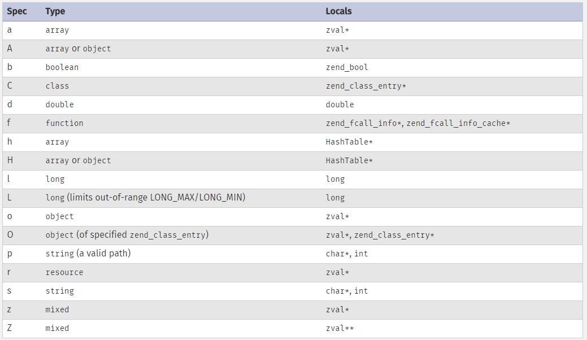

Reasons why one should write PHP extensions
- To be a better PHP programmer
- To port a library to PHP world
- To make an algorithm more efficient
Exposing C libraries in PHP
Mimicking the C API or create a new oneC programming language
- PHP syntax is similar to C
Environment requirements
- C compiler
- PHP source code
- PHP dependencies
Unix Build systems
- autoconf
- .
- automake
- .
- libtool
- .
PHPize command
phpize ./configure make make test sudo make install
Common practices
- Keep multiple PHP versions in different directories
- Enable debug (--enable-debug) and maintainer (--enable-maintainer-zts) modes
- Valgrind and gdb
- Coding standards: http://lxr.php.net/xref/PHP_5_6/CODING_STANDARDS
Virtual machines
Rasmus- VirtualBox
- Vagrant
- vagrant up, vagrant ssh, newphp 56 debug zts
Extension lifecycle
MINIT RINIT RSHUTDOWN MSHUTDOWNZVAL

Storing types

ZVAL to C

Functions
1. Define your C function 2. Create a PHP function 1. Include it in your extension 2. Expose how it uses arguments 3. Parse parameters 4. Execute C function 5. Return data to PHP landParameter formatting
"Advanced" type specifiers

Returning values

Running tests against your extension
http://qa.php.net/write-test.php http://qa.php.net/phpt_details.phpVerify extension is enabled
php -m php -d extension=foobar.so -m
Document and publish
http://doc.php.net/phd.php https://edit.php.net/ http://svn.php.net/viewvc/phpdoc/en/trunk/reference/How to become a contributor
1. Email pecl-dev@lists.php.net Who you are What you wrote Why do you think it should be part of PECLPECL
References
http://php.net/manual/en/internals2.php http://www.phpinternalsbook.com/End of section
/